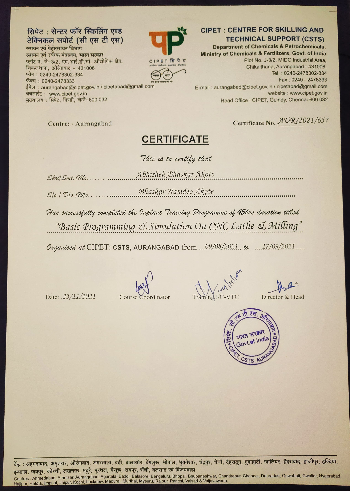

Experience
Frontend Developer at AasmaniKrishi Pvt. Ltd
As a Frontend Developer at AasmaniKrishi Pvt. Ltd, my role involves crafting intuitive and visually engaging web applications to enhance user experience. One of my notable projects includes the development of a responsive website for AasmaniKrishi, aimed at providing comprehensive information about agricultural techniques, products, and services offered by the company. This website features seamless navigation, interactive elements, and optimized performance across various devices, contributing to the company's online presence and customer engagement.
Intern at Central Institute of Petrochemicals Engineering Technology (CIPET)
As a Diploma Trainee in Mechanical Engineering at the Central Institute of Petrochemicals Engineering & Technology (CIPET), I actively contributed to skill enhancement through practical applications and projects. One significant achievement was leveraging programming skills to enhance Computer Numerical Control (CNC) processes, resulting in increased efficiency and precision in machining operations. Additionally, I played a pivotal role in the development of a Hydraulic Trainer Kit, utilizing my mechanical expertise. This involved conceptualization, design, assembly, and testing phases to create a functional and educational tool. My responsibilities encompassed tasks such as component selection, fabrication, troubleshooting, and documentation to ensure the successful completion of the project. Overall, my role at CIPET involved not only advancing technical competencies but also actively participating in hands-on projects that bridged theoretical knowledge with practical applications in the field of mechanical engineering.
